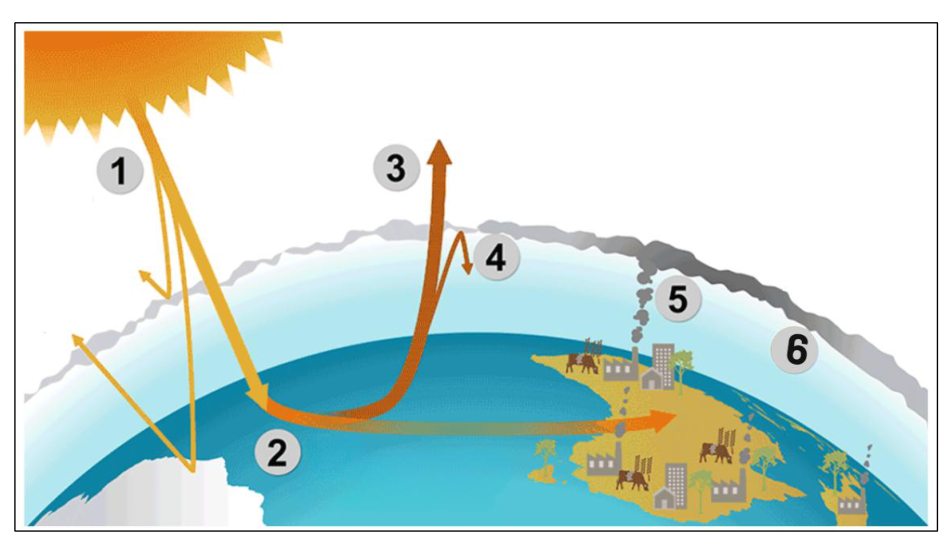
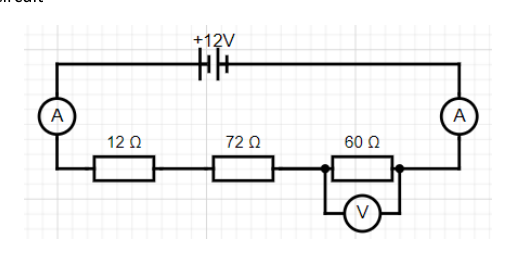
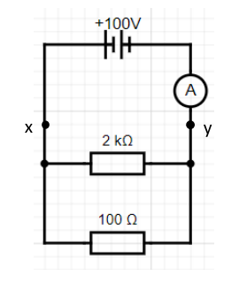
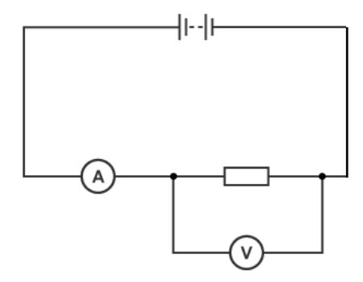

Section A: Multiple choice (9 marks)
What are two main greenhouse gases for Earth?
Which correctly describes how greenhouse gases interact with radiation?
If human civilisation had never developed on Earth, would there be a greenhouse effect?
The natural greenhouse effect keeps Earth warm enough for life. Humans have enhanced it.
What is the main process by which plants take in carbon dioxide from the atmosphere?
When a charged battery is connected in a closed circuit, electrons flow from the ________ terminal to the ________ terminal.
Electrons flow from negative to positive. Conventional current is shown going the other way.
Which of the following is not an advantage of solar energy?
Adding resistance to a series circuit will:
An electrician measures the current through a 1000 Ω resistor as 0.02 A. What must the voltage across this resistor be?
V = IR = 0.02 × 1000 = 20 V.
Which part of the atom has a negative charge?
Section B: Short answer (31 marks)
Question 1 (6 marks)
What is the enhanced greenhouse effect, and what molecular characteristic do greenhouse gases have in common?
The enhanced greenhouse effect is the increase in Earth's average temperature caused by higher concentrations of greenhouse gases in the atmosphere, which trap more heat (1 mark).
Greenhouse gases have three or more atoms in each molecule (e.g. carbon dioxide, methane), which lets them absorb and re-emit infrared radiation (1 mark).
Apart from warming the Earth, describe two ways the enhanced greenhouse effect is affecting our planet.
Any two, for example:
- Rising sea levels: melting polar ice caps and glaciers, and the thermal expansion of seawater, raise sea levels, causing coastal flooding and erosion.
- Reduced marine biodiversity: warmer seas and changing ocean chemistry disrupt marine ecosystems, reducing species diversity and the health of coral reefs.
Other acceptable answers include more frequent algal blooms and more frequent extreme weather.
State one human activity that unbalances the carbon cycle, and explain how it makes the enhanced greenhouse effect worse.
Burning fossil fuels or deforestation (1 mark). Carbon that was stored is released back into the atmosphere as CO2, which amplifies the greenhouse effect and contributes to global warming. For deforestation, losing trees also reduces the planet's ability to absorb CO2 (1 mark).
Question 2 (3 marks)
The diagram illustrates the enhanced greenhouse effect.

Write the number of the stage in the diagram that matches each description.
| Description of each stage | Stage |
|---|---|
| Heat radiates from Earth towards space. | |
| This is trapping extra heat and causing the Earth's temperature to rise, along with other effects. | |
| Solar radiation reaches the Earth's atmosphere; some of it is reflected back into space. | |
| The rest of the Sun's energy is absorbed by the land and the oceans, heating the Earth. | |
| Human activities such as burning fossil fuels, agriculture and land clearing are increasing the amount of greenhouse gases released into the atmosphere. | |
| Some of this radiant heat is trapped by greenhouse gases in the atmosphere, keeping the Earth warm enough to sustain life. |
Question 3 (7 marks)

Calculate the total resistance of the circuit.
RT = 12 + 72 + 60 = 144 Ω.
Calculate the total current in the circuit.
I = V / R = 12 ÷ 144 = 0.083 A.
There are two ammeters in this circuit. Would you expect their readings to be identical? Justify your answer.
Yes, both ammeters should read the same (1 mark), because in a series circuit there is only one path for the charge to flow, so the current is the same everywhere (1 mark).
Hence calculate the voltage drop across the 60 Ω resistor. (Hint: use Ohm's law.)
V = IR = 0.083 × 60 = 5 V.
Question 4 (8 marks)

Show that the total resistance of the circuit is 95.24 Ω.
1 / RT = 1 / 2000 + 1 / 100 = 1 / 2000 + 20 / 2000 = 21 / 2000 (1 mark)
RT = 2000 ÷ 21 = 95.24 Ω (1 mark)
Calculate the total current in the circuit. (Hint: use Ohm's law.)
I = V / R = 100 ÷ 95.24 = 1.05 A.
What is the expected voltage drop across each resistor? Justify your answer.
100 V across both resistors (1 mark), because each resistor is on its own independent parallel branch, connected directly across the same 100 V supply (1 mark).
What would happen if an extra wire, with no resistor, was connected directly between points x and y? What is this called, and what effect would it have on the battery?
This is a short circuit (1 mark). Almost all the current flows through the wire, which has almost no resistance, so a very large current is drawn: the battery heats up (it can burn or be damaged) and drains quickly (1 mark).
Question 5 (5 marks)
In the circuit below, an unknown resistor is connected to a voltage source. These readings were recorded for the voltage across the resistor and the current through it:

| Potential difference (V) | Current (A) |
|---|---|
| 2.10 | 0.05 |
| 3.90 | 0.09 |
| 6.20 | 0.14 |
| 7.80 | 0.21 |
| 9.60 | 0.26 |
On graph paper: plot the data; include a suitable title; include a suitable title and units on each axis; and draw a line of best fit through the data. Describe your graph, then compare.
- A suitable title, e.g. "Voltage against current for an unknown resistor" (1 mark).
- Axes labelled with quantities and units: current (A) on the horizontal axis (0–0.30) and potential difference (V) on the vertical axis (0–10) (1 mark).
- All five points plotted correctly (1 mark).
- A straight line of best fit through the data, passing close to the origin (1 mark).
Using your line of best fit, estimate the resistance of the unknown resistor.
The resistance is the gradient of the V–I graph, e.g. 9.6 ÷ 0.26 ≈ 37 Ω. Answers from 35 Ω to 45 Ω are accepted.
In a science demonstration, a Van de Graaff generator charges a metal sphere. Several light foil trays are placed on top of the sphere. When the generator is turned on, the trays fly off in different directions. Explain why, describing how the sphere and trays become charged and the forces acting on the trays.
- The foil trays are in contact with the charged sphere but insulated from the ground, so charge spreads onto them and they all gain the same charge (positive in this demonstration) (1 mark).
- Like charges repel, so each tray is pushed away from the sphere and from the other trays, and they fly apart (1 mark).